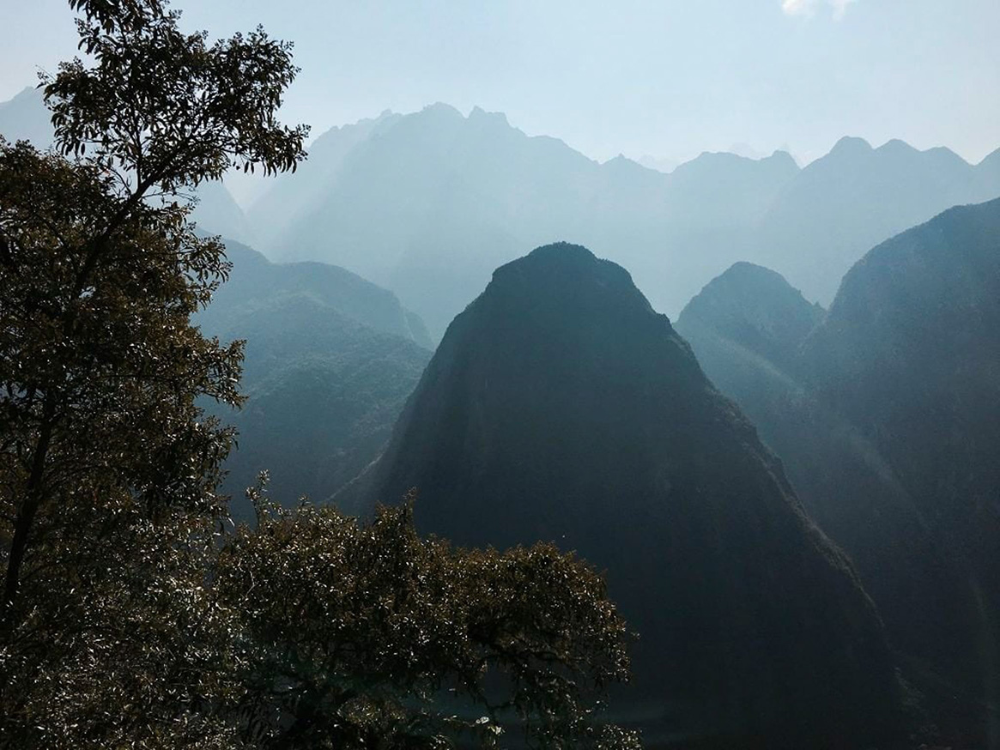

Machu Picchu
Miasto Inków w chmurach, ukryte w peruwiańskich Andach.

Historia i znaczenie
Machu Picchu to starożytne miasto Inków zbudowane w XV wieku na wysokości 2,430 metrów nad poziomem morza. Uznawane jest za najważniejsze arcydzieło architektury andyjskiej i inżynierii hydrologicznej.
Interesujące fakty:
- Znane jako "Miasto Zaginionych"
- Odkryte przez Hiram Binghama w 1911 roku
- Nigdy nie zostało odkryte przez konkwistadorów hiszpańskich
- UNESCO wpisało je na listę światowego dziedzictwa w 1983 roku
Informacje techniczne:
| Lokalizacja: | Region Cusco, Peru |
| Wysokość: | 2,430 m n.p.m. |
| Rok budowy: | Około 1450 n.e. |
| Znaczenie: | Centrum religijne Inków |